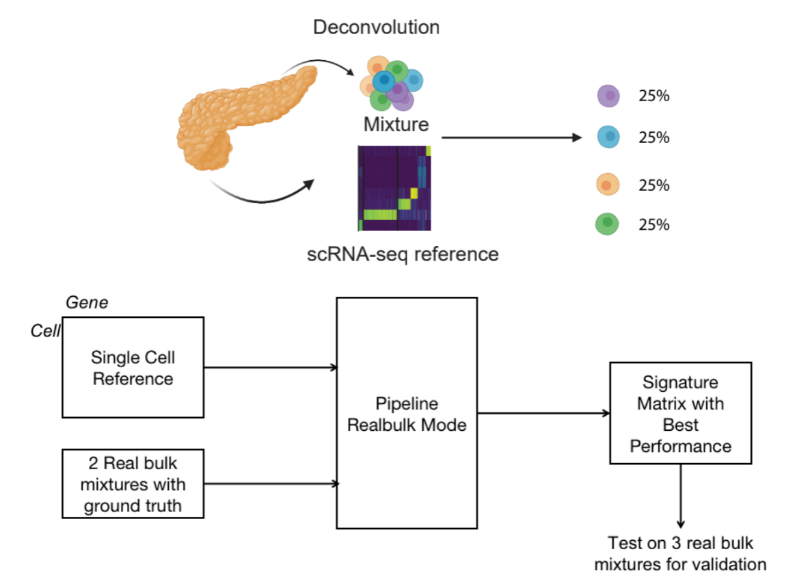

Here are the projects I'm currently working on.
Improve the performance of single cell transcriptomics deconvolution using marker gene selection

Single cell transcriptomics data gives the measurements of gene expressions for each individual cell. In practice, usually we only have bulk RNA-seq data which contains the gene expressions for a mixture of single cells because of its price and efficiency. When making clinical decisions, however, experts care more about the proportion of different cell types which can be easily deduced in single cell RNA data. To solve this issue, deconvolution is a process which takes the single cell profile as input and gives the cell type proportion within this mixture. In this project, we propose a new marker gene selection method and find that it is able to improve the performance of deconvolution.
Basically, I have done the following works:
- Benchmark the performance of deconvolution on bulk-RNA Seq under various conditions, including different deconvolution algorithms, marker selection strategies and pseudo-bulk generation methods. Based on the results, MuSiC is chosen to be the model to use in deconvolution pipeline because its performance and interoperability.
- Write a pipeline with enables a better performance of deconvolution with proper number of marker genes. It supports two different modes: pseudobulk mode which only takes a scRNA data as input and realbulk mode which takes scRNAdata, real bulk data and its ground truth as input. Pseudobulk mode is easier to use whereas realbulk mode will typically gives us a better result.
Multi-gridding NEURON reaction-diffusion model development
Sentimental analysis and trend analysis of marijuana projects
Sed ut perspiciatis unde omnis iste natus error sit voluptatem accusantium doloremque laudantium, totam rem aperiam.